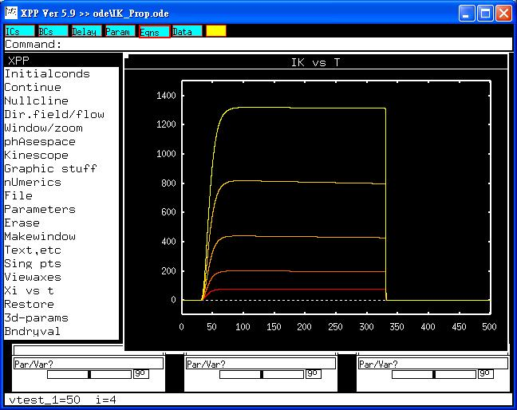

This is a readme file for the models associated with the paper: Yen-Ching Liu et al., The mechanisms of propofol-induced block on ion currents in differentiated H9c2 cardiac cells. Eur. J. Pharmacol. 2008;590: 93-98. Abstract: General anesthetic propofol (2,6-bis(isopropyl)-phenol) possess a chemical structure unrelated to other anesthetic drugs. It has been known to block a variety of ion currents. This study is designed to determine the effect of this drug on ion currents in differentiated H9c2 cardiac cells. The effects of propofol, an intravenous anesthetic agent with a distinct chemical structure, on ion currents of differentiated clonal cardiac (H9c2) cells were investigated in this study. Propofol (10-300 muM) suppressed the amplitude of delayed rectifier K(+) current (I(K(DR))) in a concentration-dependent manner with an IC(50) value of 36 muM. This compound reduced activation time constant and increased current inactivation, although no voltage dependency of propofol-induced block of I(K(DR)) can demonstrated. Neither diazoxide, pinacidil, nor caffeic acid phenethyl ester had any effect on propofol-induced block of I(K(DR)). Propofol (30 muM) had no effect on erg-mediated K(+) current in these cells; however, it suppressed L-type Ca(2+) current (I(Ca,L)) of cardiac and skeletal types to a similar extent. Intracellular dialysis with propofol (100 muM) had no effects on I(K(DR)) or I(Ca,L). Numerical simulations of I(K(DR)) based on a Markovian model reproduce the experimental results and show that propofol-induced blockade of I(K(DR)) is associated with an decrease in forward rate of the activation process and an increase in transitional rate into the inactivated state. Propofol can suppress I(K(DR)) in differentiated H9c2 cardiac cells in a concentration- and state- dependent manner. These effects can significantly contribute its action on functional activity of heart cells. To run the models: XPP: start with the command xpp IK_Prop.ode Mouse click on "Initialconds", and then "(G)o". Regarding xpp program, please contact with Bard Ermentrout's website: http://www.pitt.edu/~phase/ Here describes the details in how to get and use xpp. To run a series of voltage-clamp studies shown in IK-prop.jpg, click Initialconds -> Range, then under "Range over", change to 'vtest_1', and then select voltage protocol from Steps (4), Start (10) and End (+50). Change Cycle Color to yes and press (G)o, This makes traces:  The model file was supplied by: Dr. Sheng-Nan Wu National Cheng Kung University Medical College Tainan 70101, Taiwan snwu@mail.ncku.edu.tw